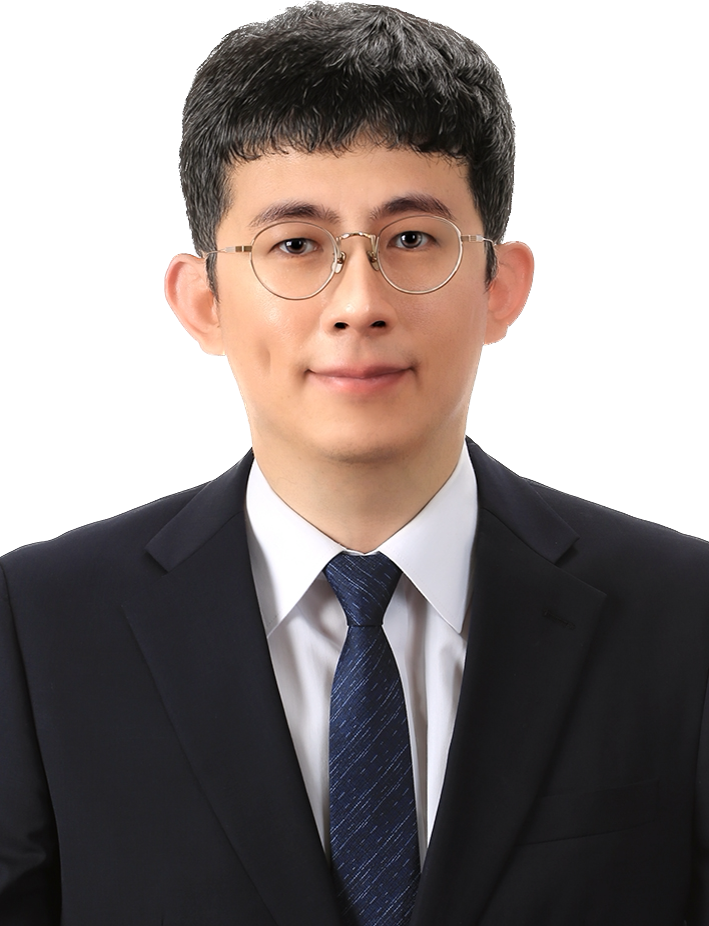

People
Professor

Jahyun Koo, Ph.D. (구자현)
Contact Information
Tel : +82-2-3408-3507
Email : jahyun@sejong.ac.kr
Office : 충무관 928호 (Chungmu-gwan 928)
Education
- Ph.D. in Electrical Engineering, POSTECH, 2021
- M.S. in Electrical Engineering, POSTECH, 2016
- B.S. in Electronic & Electrical Engineering, Hongik University, 2014
Employment History
- 2023.8 – present : Assistant Professor, Dept. of Semiconductor System Engineering, Sejong University, Korea
- 2021.9 – 2023.8 : Postdoctoral Researcher, Dept. of Electrical and Computer Engineering, University of California, Santa Barbara, United States
- 2021.3 – 2021.8 : Postdoctoral Researcher, Dept. of Electrical Engineering, POSTECH, Korea
Fellowship
- Postdoctoral Fellowship Program from National Research Foundation of Korea (Sep. 2021 – Aug. 2024)
Students
| Name | Course | Interest |
|---|---|---|
| 홍예준, Ye Jun Hong 2025.03. ~ |
M.S. Candidate | SAR ADC |
| 윤성진, Seoungjin Yun 2025.03. ~ |
M.S. Candidate | CIM, LDO |
| 김태현, Tae Hyun Kim 2026.03. ~ |
M.S. Candidate | PLL |
| 이바람, Ba Ram Lee 2026.03. ~ |
M.S. Candidate | RC Oscillator |
| 정범수, Beom Su Jung 2026.09. ~ |
M.S. Candidate | RISC-V, AI Accelerator |
| 김현호, Hyun Ho Kim 2026.03. ~ |
B.S & M.S. Candidate | ADC & DCDC Converter |
HICS Lab, Dept. of Semiconductor System Engineering, Sejong University · Last updated : 2026. 11.